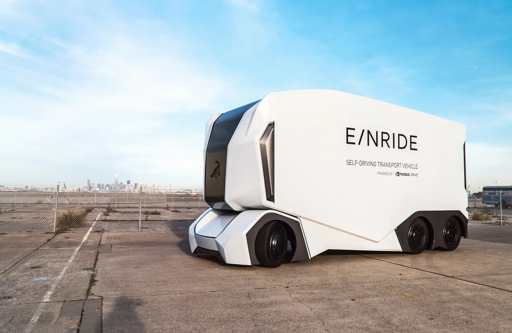
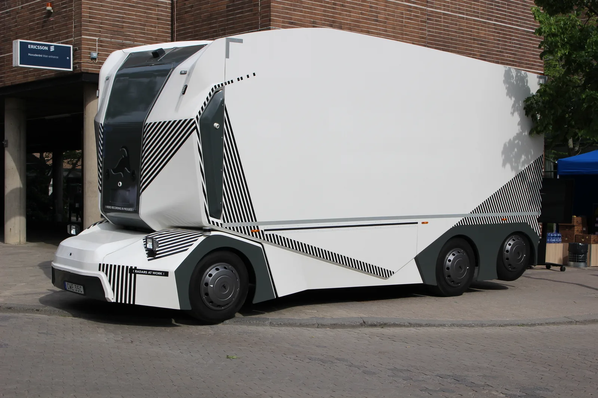
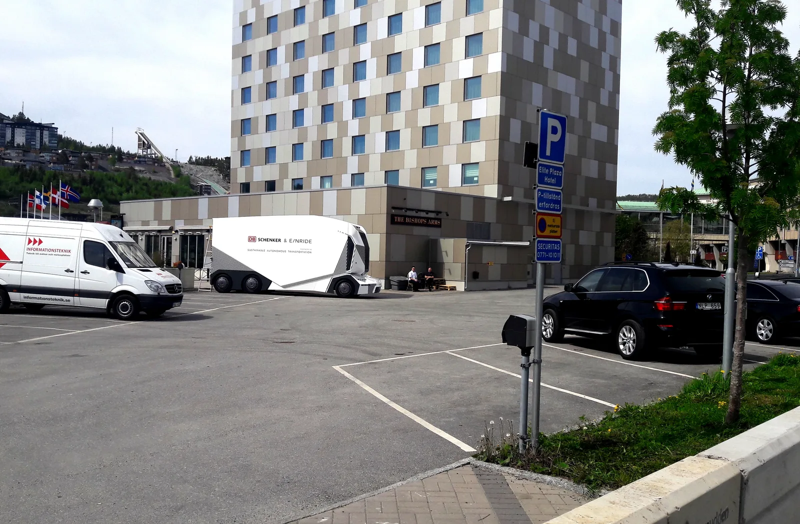
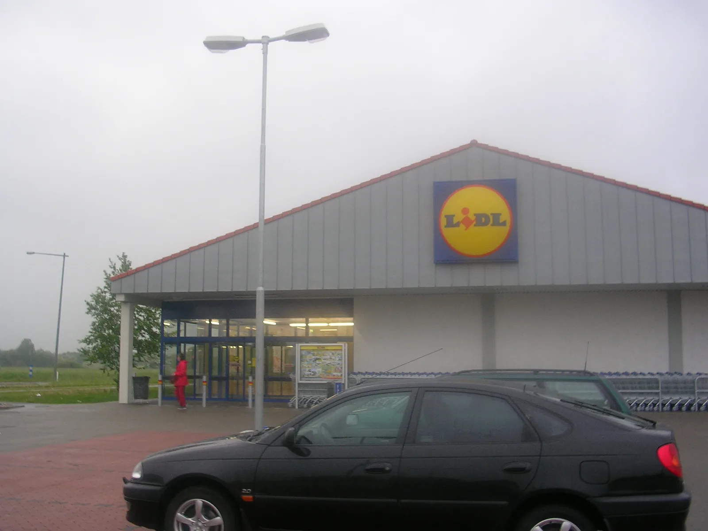

▲ 아인라이드의 캡리스(운전석 없는) 자율주행 트럭. 운전석은 물론 안전요원 탑승 공간 자체가 없는 구조다 ⓒ Wikimedia Commons
독일 마트 체인 리들의 물류창고 앞에 낯선 모양의 트럭이 서 있습니다. 앞유리도, 운전석도, 스티어링 휠도 없는 각진 형태입니다. 그런데 이 트럭이 실제로 도로를 달려 매장까지 물건을 배송합니다.
스웨덴 자율주행 트럭 스타트업 아인라이드(Einride)의 캡리스(cab-less) 트럭 이야기입니다. 독일 연방자동차청(KBA)이 세계 최초로 이런 형태의 트럭에 공공도로 상시 운행을 허가하면서 화제가 됐습니다.
1. 무엇이 배치됐나 — 캡리스 트럭의 정체
아인라이드의 트럭은 처음부터 사람이 운전하는 상황을 가정하지 않고 설계됐습니다. 운전석, 스티어링 휠, 전면 유리창이 모두 없는 구조로, 화물칸과 주행 장치만으로 이뤄져 있습니다.
이번에 리들 물류망에 투입된 트럭은 운전자도, 원격 대응을 위한 안전요원도 탑승하지 않은 SAE 레벨4 자율주행 트럭입니다. 독일의 엄격한 인증 절차를 통과해 공공도로에서 상시(데일리) 운행이 가능한 상태로 허가받았다는 점이 이번 발표의 핵심입니다.

▲ 아인라이드의 캡리스 트럭. 앞부분에 운전석과 전면 유리가 들어갈 공간 자체가 없다
2. 아인라이드는 어떤 회사인가
2016년 스웨덴 스톡홀름에서 설립된 아인라이드는 AI 기반 화물 지능화 소프트웨어와 자율주행 기술, 전기 대형 트럭 플릿을 함께 운영하는 회사입니다. 나스닥에 ENRD로 상장돼 있습니다.
아인라이드의 캡리스 트럭 실험은 이번이 처음이 아닙니다. 2018년 스웨덴 옌셰핑(Jönköping)에서 DB 쉥커(DB Schenker)와 함께 세계 최초로 캡리스 자율주행 트럭의 공공도로 시험 운행을 진행한 바 있습니다. 당시에는 약 300m 구간(공공도로 약 100m 포함)을 오가는 짧은 시범 운행이었고, 원격지에 있는 운영자가 360도 뷰가 가능한 관제 공간에서 필요시 원격으로 개입할 수 있는 구조였습니다.
이번 리들 프로젝트는 그로부터 8년 만에, 시범 운행이 아닌 일상적인 상용 물류 구간으로 확장됐다는 점에서 의미가 다릅니다. 아인라이드는 북미·유럽·중동에서 세계 최대 규모급의 전기 중대형 트럭 상용 플릿을 운영하고 있다고 밝히고 있습니다.

▲ 주차된 아인라이드 트럭. 'DB SCHENKER & E/NRIDE' 문구가 새겨진 초기 시범 운행 당시 차량이다
3. 운행 방식과 노선
현재 트럭은 리들의 물류창고·배송센터에서 독일 에더뮌데 지역 매장까지 상품을 실어 나릅니다. 정해진 구간을 반복 운행하는 방식으로, 사람이 개입하지 않아도 되는 조건에서만 운행하도록 설계됐습니다.
리들과 아인라이드는 여기서 그치지 않고 여러 지점을 순차적으로 오가는 '멀티 스톱 밀크런(multi-stop milk run)' 모델로 노선을 확장할 계획입니다. 리들의 모회사인 슈바르츠 그룹(Schwarz Group) 산하 다른 계열사로도 도입을 확대하는 방안이 논의되고 있습니다.
리들 측 관계자는 "우리는 고객을 위한 상품이 항상 올바른 장소에, 올바른 시간에, 올바른 품질로 도착하도록 보장한다"고 이번 도입 배경을 설명했습니다.
4. 규제 허들 — 독일 KBA 허가의 의미
독일의 자동차 인증 절차는 세계에서 가장 까다로운 축에 속합니다. 아인라이드 CEO 루즈베 샬리(Roozbeh Charli)는 "독일의 승인 절차는 세계에서 가장 엄격한 수준이며, 이곳에서 허가를 받았다는 것은 자신감을 갖고 사업을 확장할 수 있는 기반이 된다"고 말했습니다.
이번 허가는 단순히 시험 운행을 승인한 것이 아니라, 사람이 전혀 타지 않은 상태에서 일상적으로(daily) 공공도로를 달리는 것을 승인했다는 점에서 상징성이 큽니다. 유럽 최대 도로 화물 운송 시장인 독일에서 이런 허가가 나왔다는 것은, 다른 유럽 국가로의 확산 가능성도 열어둔 셈입니다.
5. 산업적 의미와 경쟁 구도
| 업체 | 차량 형태 | 운영 방식 |
|---|---|---|
| 아인라이드 | 캡리스(운전석 자체 없음) | 사람 완전 미탑승, 공공도로 상시 운행 |
| 웨이모 비아(Waymo Via) | 일반 트럭 형태 유지 | 안전요원 탑승 시험 위주 |
| 아우로라(Aurora) | 일반 트럭 형태 유지 | 일부 구간 무인 운행 시작 단계 |
| 코디악(Kodiak) | 일반 트럭 형태 유지 | 제한 구역·군용 등 특수 용도 확대 |
대부분의 자율주행 트럭 업체가 기존 트럭 형태를 유지한 채 안전요원을 단계적으로 줄여가는 전략을 택한 반면, 아인라이드는 처음부터 운전석 자체를 없앤 전용 설계로 접근했습니다. 이번 리들 사례는 그런 설계 방식이 실제 상용 물류 현장에서, 그것도 세계에서 가장 까다로운 인증 국가 중 하나인 독일에서 통했다는 것을 보여주는 사례로 평가됩니다.

▲ 독일의 리들 매장 외관. 이번 캡리스 트럭은 리들의 물류창고와 매장 사이를 오가며 상품을 배송한다
6. 정리
리들과 아인라이드가 운전석 자체가 없는 SAE 레벨4 캡리스 트럭을 독일 공공도로에 상시 투입했습니다. 독일 연방자동차청(KBA)의 첫 허가를 받은 이 트럭은 리들의 물류창고와 에더뮌데 매장 사이를 오가며 운행 중입니다.
아인라이드는 2018년 첫 시범 운행 이후 8년 만에 시범 단계를 넘어 일상적인 상용 물류로 확장하는 데 성공했습니다. 향후 다중 정차 노선과 슈바르츠 그룹 계열사로의 확대까지 예고돼 있어, 운전자 부족 문제와 물류망 안정성 확보라는 과제에 대한 하나의 답으로 자리잡을 수 있을지 주목됩니다.